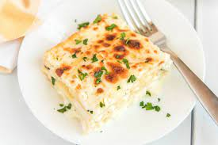

Lasagne

This white chicken lasagna recipe is a satisfying and crowd-pleasing twist on a classic Italian favorite.
What to Serve With Chicken Lasagna
Looking for serving inspiration? Your search ends here. Explore our collection Easy Side Dishes for Lasagna. Here are some of the top-rated recipes you'll find:
· Roasted Asparagus and Mushrooms
· Peach and Tomato Caprese Salad
· Arugula-Fennel Salad
Can You Freeze Chicken Lasagna?
If you're planning to freeze the white chicken lasagna, it's best to cook it in a foil baking dish. Allow it to cool, then cover the whole thing in at least one layer of storage wrap. Wrap it again in aluminum foil to prevent freezer burn. Freeze for up to three months.
Ingredients
- 9 lasagna noodles
- ½ cup butter
- 1 onion, chopped
- 1 clove garlic, minced
- ½ cup all-purpose flour
- 2 cups chicken broth
- 1 ½ cups milk
- 1 teaspoon salt
- 4 cups shredded mozzarella cheese, divided
- 1 cup grated Parmesan cheese, divided
- 1 teaspoon dried basil
- 1 teaspoon dried oregano
- ½ teaspoon ground black pepper
- 2 cups ricotta cheese
- 2 cups cubed, cooked chicken meat
- 2 (10 ounce) packages frozen chopped spinach, thawed and drained
- 1 tablespoon chopped fresh parsley
Steps
- Preheat the oven to 350 degrees F (175 degrees C).
- Bring a large pot of lightly salted water to a boil. Add lasagna noodles and cook for 8 to 10 minutes or until al dente; drain and rinse with cold water.
- Meanwhile, melt butter in a large saucepan over medium heat; stir in onion and garlic. Whisk in flour until lightly browned and onion is tender, about 2 minutes. Add chicken broth, milk, and salt; cook, whisking continuously, for 1 minute.
- Stir in 2 cups mozzarella and 1/4 cup Parmesan until well combined. Season with basil, oregano, and black pepper; remove from heat and set aside.
- Spread 1/3 of the sauce mixture in the bottom of a 9x13-inch baking dish. Layer with 3 lasagna noodles, ricotta, and chicken. Arrange 3 lasagna noodles over the chicken and layer with 1/3 of the sauce mixture, spinach, remaining 2 cups mozzarella, and 1/2 cup Parmesan. Arrange remaining noodles over cheese and spread remaining sauce evenly over noodles. Sprinkle with parsley and remaining 1/4 cup Parmesan.
- Bake in the preheated oven for 35 to 40 minutes.